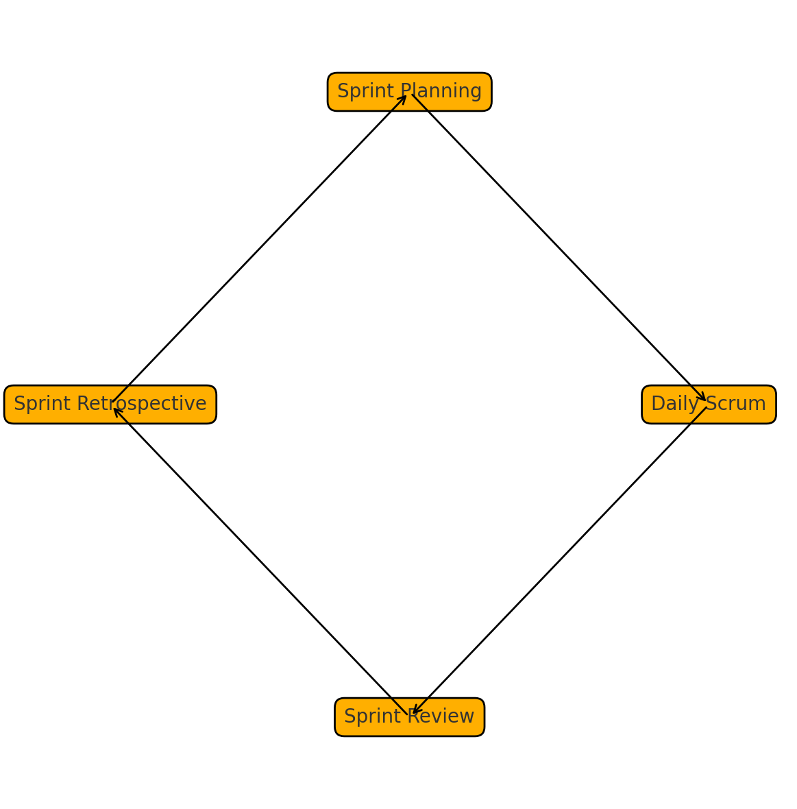

O Scrum surgiu no início dos anos 1990 como uma resposta à necessidade de gerenciar projetos complexos de forma mais flexível. Sua adoção crescente em empresas de tecnologia e negócios demonstra a eficácia do framework em promover entregas frequentes e adaptabilidade.
0.1 Valores do Scrum
Os valores do Scrum orientam a maneira de trabalhar em equipe, garantindo um ambiente colaborativo e eficaz.
Coragem: enfrentamento de desafios técnicos e de negócios, assumindo riscos calculados.
Foco: no trabalho da Sprint e nos objetivos do time, evitando distrações.
Comprometimento: cumprir o que for acordado, mantendo a confiança entre os membros.
Respeito: reconhecer contribuições e diferenças, valorizando a pluralidade de ideias.
Abertura: transparência sobre trabalho e desafios, facilitando a inspeção dos artefatos.
0.2 Pilares do Scrum
Para que o Scrum funcione, ele se apoia em três pilares fundamentais que devem ser cultivados pela equipe.
Transparência: artefatos visíveis e linguagem comum, garantindo entendimento compartilhado.
Inspeção: revisão frequente dos artefatos e progresso, permitindo correções imediatas.
Adaptação: ajustes imediatos quando algo sai do esperado, mantendo o rumo do projeto.
1. Papéis no Scrum
Cada papel no Scrum tem responsabilidades bem definidas, alinhando expectativas e garantindo fluidez nas entregas.
1.1 Product Owner (PO)
O PO representa os interesses do cliente, definindo o que deve ser construído e a ordem de prioridade.
Responsável pelo Product Backlog e priorização de itens, baseando-se no valor de negócio.
Comunica visão e garante valor de negócio, alinhando objetivos de longo prazo.
Disponível para esclarecer requisitos ao time, reduzindo ambiguidades.
1.2 Scrum Master (SM)
O SM atua como facilitador, removendo impedimentos e promovendo a adoção correta do Scrum.
Guia da adoção do Scrum, remove impedimentos para o time.
Facilita eventos Scrum e protege o time de distrações externas.
Ensina práticas ágeis e promove melhoria contínua no processo.
1.3 Time de Desenvolvimento
Times de desenvolvimento no Scrum são auto-organizados, assumindo total responsabilidade pela entrega do incremento.
Equipes multifuncionais e auto-organizadas, com autonomia para definir como realizar o trabalho.
Todas as habilidades necessárias para entregar incremento sem dependências externas.
Tamanho recomendado: 3 a 9 membros, equilibrando comunicação e eficiência.
2. Artefatos do Scrum e Exemplos
Os artefatos criam transparência e fornecem informações essenciais para a equipe e stakeholders.
Artefato
Descrição
Propriedade
Product Backlog
Lista ordenada de tudo que pode ser necessário no produto.
Product Owner
Sprint Backlog
Conjunto de itens do Backlog selecionados para a Sprint + plano para entregá-los.
Time de Dev.
Incremento
Soma de todos os itens prontos que satisfazem Definition of Done.
Time de Dev.
Exemplo: Product Backlog
Como usuário, quero me cadastrar com email e senha para acessar o sistema.
Como usuário, quero recuperar senha por email para não perder acesso.
Como administrador, quero visualizar relatório de vendas para análise mensal.
Como cliente, quero adicionar produtos no carrinho para finalizar compra.
Exemplo: Sprint Backlog (Sprint 1)
#
Item
Estimativa (SP)
Status
1
Cadastro de usuário
5
Em progresso
2
Login com JWT
3
Pendente
3
Design da página inicial
2
Pendente
Exemplo: Incremento e Definition of Done
Funcionalidade implementada e testada com 100% cobertura unitária.
Documentação do endpoint API atualizada.
Revisão de código concluída e merge no branch principal.
Deploy no ambiente de homologação realizado.
2.1 Definition of Done
Critérios compartilhados que definem quando um item está concluído, garantindo qualidade e consistência no incremento entregue.
3. Eventos do Scrum
Os eventos estruturam o processo Scrum, promovendo inspeção e adaptação regulares.
3.1 Sprint
Período fixo (1–4 semanas) para criar incremento, proporcionando cadência ao projeto.
Sem mudanças que quebrem o Goal da Sprint, garantindo foco e previsibilidade.
3.2 Sprint Planning
Definir objetivo da Sprint e selecionar itens do Product Backlog com base em valor e capacidade.
Time estima o esforço (Planning Poker, T-Shirt Sizing), promovendo entendimento compartilhado.
3.3 Daily Scrum
Reunião diária de 15min para sincronização, mantendo transparência do progresso.
Foco: O que foi feito, o que será feito e impedimentos, garantindo quick wins diários.
3.4 Sprint Review
Apresentação do incremento entregue para stakeholders, coletando feedback imediato.
Feedback de stakeholders e atualização do Product Backlog, alinhando prioridades.
3.5 Sprint Retrospective
Reflexão sobre o processo e identificação de melhorias, fomentando cultura de aprendizado.
Definição de ações para a próxima Sprint, promovendo melhoria contínua.
4. Fluxo Visual

Figura: Ciclo de eventos do Scrum durante uma Sprint, ilustrando sequência e interdependência dos eventos.
5. Questões-Problema e Discussão
As atividades a seguir incentivam a aplicação prática dos conceitos apresentados.
Debata em duplas: como o PO definiria o top 3 itens do Product Backlog para o próximo release?
No grupo: simule uma Sprint Planning usando os exemplos de Sprint Backlog e faça estimativas em Planning Poker.
Discuta: quais benefícios e desafios vocês identificam ao usar uma Definition of Done rigorosa?
Estudo de caso: como vocês adaptariam o Daily Scrum para equipes remotas, mantendo a transparência?
Role-play: um stakeholder insatisfeito exige mudança de escopo no meio da Sprint; como o SM e o PO devem responder?